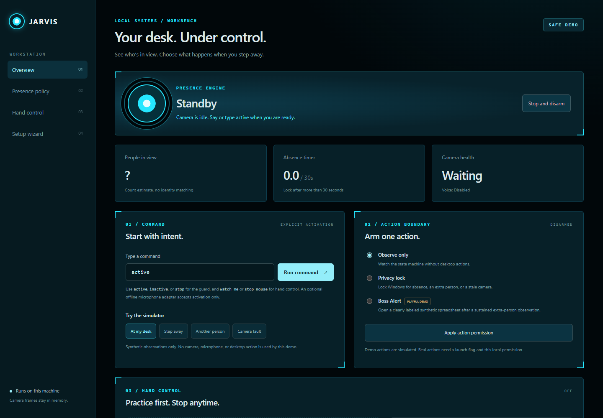

Answer three questions: what you use your computer for, a monthly budget, and the AI account you already have. You get one recommended setup and the next steps.
Jarvis runs on a Windows computer. A phone can plan and practice, but cannot install Jarvis or control a computer. Camera, mouse control and Windows lock stay off until you switch them on.
JARVIS / DASHBOARDON YOUR COMPUTER

JDashboard preview
The dashboard runs on your own computer. Every device stays off until you switch it on there.
HAND CONTROL IN FOUR MOVES
Say it. Show it. Point. Clap to stop.
This is the whole vocabulary. You can learn it in a minute and practice it below without a camera.
01
Say “watch me”
Or type it. Jarvis turns on the camera for hand control only. “Start hand tracking” works too.
02
Show an open hand
Palm toward the camera, about an arm’s length away, with light in front of you. Jarvis finds 21 points on your hand.
03
Point, then pinch
Your index fingertip moves the pointer. Thumb to middle finger is a left click. Thumb to ring finger is a right click. Holding a pinch clicks once.
04
Clap to stop
Hold both hands apart, then bring them together. The camera sees the clap. No microphone is used.
Esc
Esc always stops hand control. It works on its own, even if the camera is slow.
◉
A clap stops hand control only. The presence guard has its own switch and stays as you left it.
PRACTICE PAD
Try the moves here. Nothing real moves.
This pad runs inside this page only. It never asks for your camera, and it cannot move your real cursor. Your mouse, finger, or arrow keys stand in for your index finger.
practice desktop
Notes
Photos
Budget
OpenRenameProperties
PRACTICE ONLYStart with step 1: say “watch me”.
Watch me
Open hand
Point and pinch
Clap to stop
Camera off
Presence guard (separate switch)
Press “Say watch me” to begin. The practice pad does not use a camera or microphone.